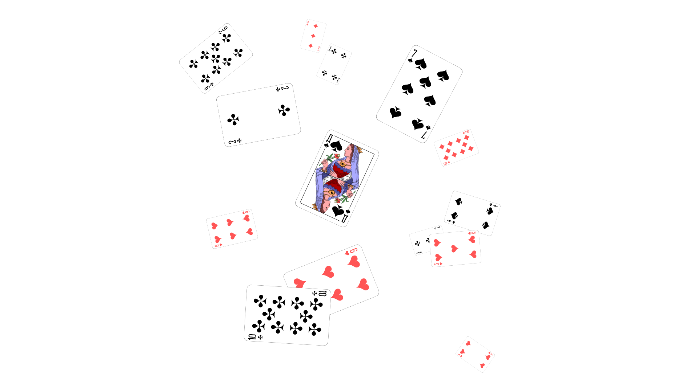
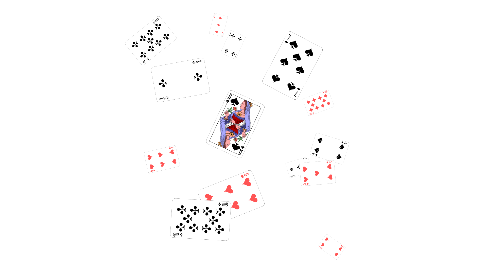

Alice was beginning to get very tired of sitting by her sister on the bank, and of having
nothing to do: once or twice she had peeped into the book her sister was reading, but it had no pictures or
conversations in it.
And what is the use of a book without pictures or
conversations?
She was considering whether the pleasure of making a daisy-chain would be worth the trouble of getting up
and picking the daisies, when
suddenly
a White Rabbit with pink eyes ran close by her!
She ran across the field after it, and fortunately was just in time to see it pop down a large rabbit-hole
under the hedge.
In another moment down went Alice after it, never once considering how in the world she was to get out
again.
The rabbit-hole went straight on like a tunnel for some way, and then
dipped
suddenly
down,
so suddenly that Alice had not a moment to think about stopping herself
before she found herself falling


 
